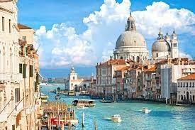
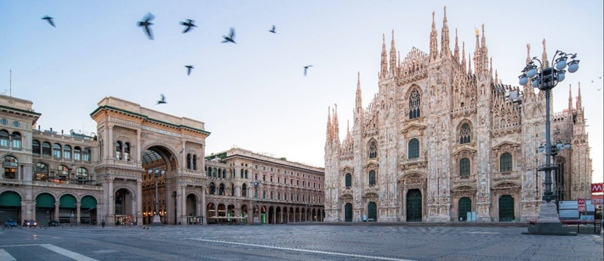
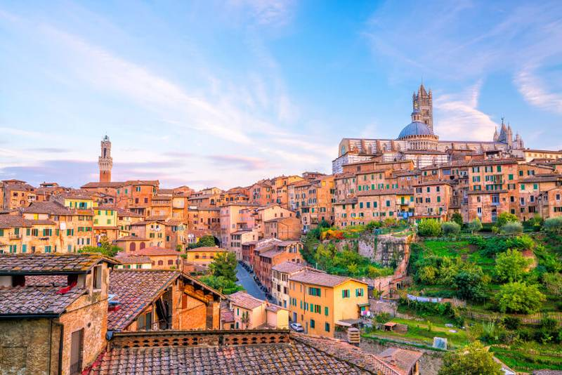

Знаменитый на весь мир итальянский город Венеция прославился благодаря своей уникальности. Вместо улиц тут
каналы, а дома вырастают прямо из воды! Где ещё есть такая изумительная атмосфера? К тому же весь город
напоминает огромный музей под открытым небом — архитектура, древние здания, музеи, в которых хранятся
бесценные
произведения искусства… Неудивительно, что миллионы туристов прибывают сюда каждый год.
Самая красивая и посещаемая туристами часть города — его исторический центр. Он расположен на 118 островах,
разделённых примерно 170 каналами и соединённых четырьмя сотнями мостов.
Гондол в Венеции всегда ровно 425, не больше и не меньше. Таково постановление ассоциации гондольеров.
Работа
эта нелегка, но очень прибыльна, поэтому лицензия гондольера стоит огромных денег.
Все венецианские гондолы построены по одному и тому же принципу — 11 метров длины и 140 сантиметров ширины.
Они
вмещают шестерых пассажиров и самого гондольера.
Наименее предпочтительные месяцы для посещения Венеции — ноябрь и декабрь, так как в это время часто
поднимается
уровень воды, и город частично затапливает.
В изданном в начале 18-го века путеводитель по Венеции знаменитый Антонио Вивальди и его отец упоминаются,
как
лучшие скрипачи в городе (см. интересные факты о Вивальди).
Тут нет канализации, все отходы смываются прямо в каналы. Поэтому сантехников тут тоже нет, так как им здесь
нечем было бы заняться. Именно поэтому в жару от каналов зачастую попахивает, и отнюдь не тюльпанами.
У Венеции есть и небольшой пригород, расположенный на материке — Местра.
Найти в Венеции общественный туалет — задача нетривиальная, так как их тут почти нет. А те, что есть, стоят
полтора-два евро.
Лицензии гондольеров передаются по наследству, от отца к сыну.
Первая женщина в рядах венецианских гондольеров появилась лишь в 2009 году — до этого эта профессия была
чисто
мужской.
В Венеции нет ни автомобилей, ни автобусов. Роль доступного общественного транспорта тут выполняют водные автобусы, вроде российских «речных трамвайчиков». Венеция — самый дорогой город Италии. Постоянным клиентам в местных кафе почти всегда делают хорошие скидки. Туристам это, впрочем, не светит, потому что постоянными клиентами тут считаются только местные жители, регулярно посещающие одни и те же заведения. Вместо пожарных машин тут пожарные катера. Причем с пожарами тут могут возникнуть проблемы, так как за исключением самых крайних случаев морской водой пожарникам пользоваться запрещено. Соль, содержащаяся в ней, портит здания.

Если Рим представляет собой "старую Италию", то Милан - это её современный символ. Несмотря на некоторую
схожесть с типичными итальянскими городами, он сильно отличается архитектурно и атмосферно. В Милане другой
ритм
жизни, сам он довольно серый, так как многие здания построены из известняка или темного камня, а в
архитектуре
заметно влияние австрийских и французских стилей. Но несмотря на всю свою серьёзность Милан - это все же
весёлая
и эмоциональная Италия!
Милан - главный город Северной Италии и столица области Ломбардия. Это современный мегаполис, который
считается
деловым и финансовым центром страны. Милан - столица моды и бизнеса, самый стильный, дорогой и богатый город
Италии, который котируется наравне с Парижем и Лондоном у любителей развлечений и шопинга. Но не только этим
славится столица Ломбардии. Здесь можно посмотреть на такие известные достопримечательности как:
великолепный
Дуомо, замок Сфорца, включённый в список объектов Всемирного наследия ЮНЕСКО, церковь
Санта-Мария-делле-Грация,
в которой находится легендарная фреска Леонардо да Винчи "Тайная вечеря" и множество других не менее
интересных
памятников истории и культуры.
Милан можно посещать круглый год. Несмотря на то, что поздней осенью и зимой довольно туманно и дождливо.
Очень
круто город выглядит в рождественский период. Летом в Милане довольно жарко и влажно, поэтому если не
нравится
зной, то лучше выбрать весну или осень для посещения главного города Ломбардии.
 Сиена - город на севере Италии в регионе Тоскана. Является одним из самых популярных туристических центров страны с богатейшем культурным и историческим наследием. Сиену многие считают одним из самых красивых средневековых городов Италии, который не только сохранил оригинальное историческое ядро, но и атмосферу. Этот древний город, основанный по легенде Ремом, в Средневековье вовсю соперничал с Флоренцией. Сиена расположена на трёх холмах с сердцем на Пьяцца-дель-Кампо, где раньше находился римский форум. Исторический центр является объектом Всемирного наследия ЮНЕСКО. Сиена расположена практически в центре Тосканы в 70 км к югу от Флоренции. Город находится между долинами рек Арбия, Мерзе и холмами Кьянти. Климат - средиземноморский. Лето достаточно жаркое, зима мягкая с редкими отрицательными температурами.